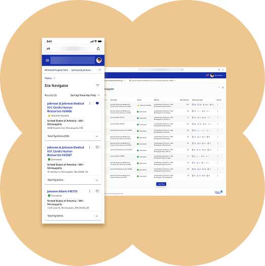
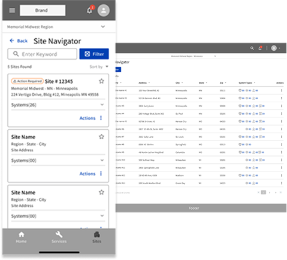
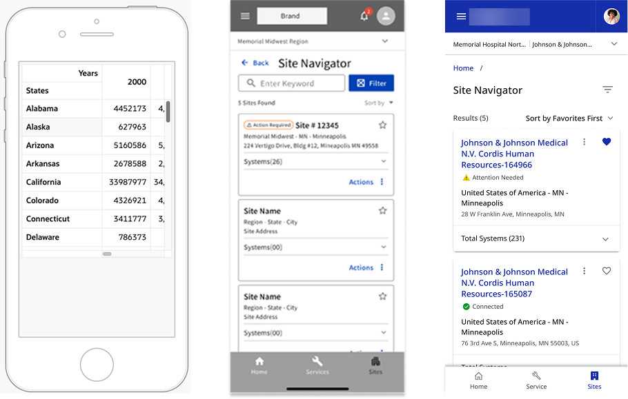
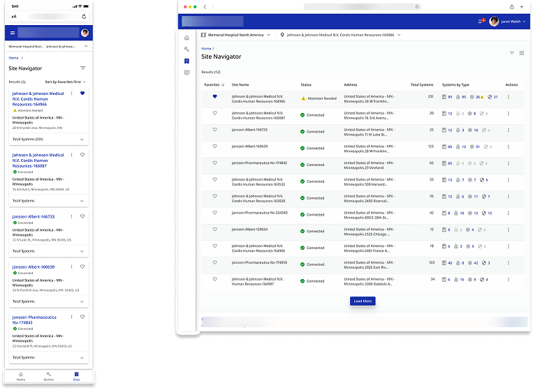
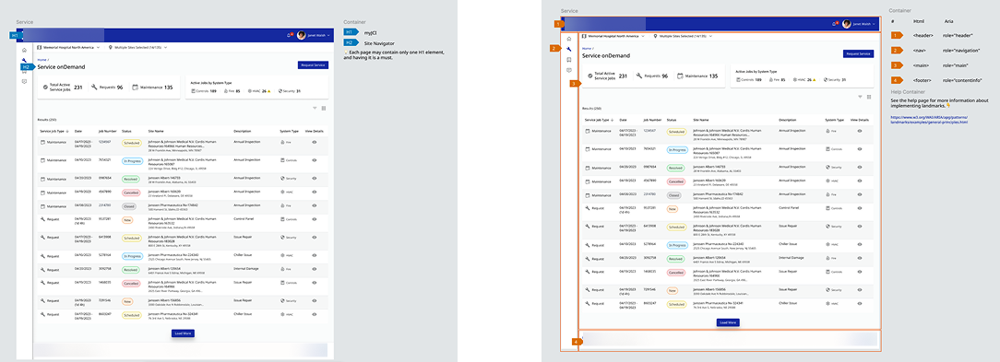
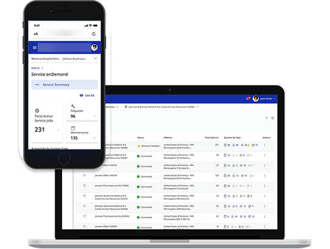
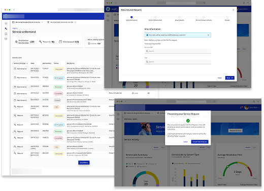
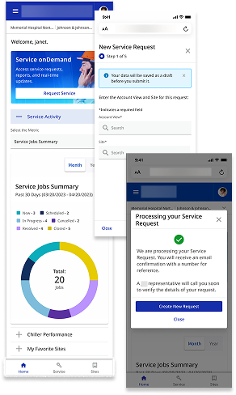

Operations Platform
2023
This project was a strategic initiative to improve customer relationships at this company. The business goal was to build a unified, self-service digital platform that would give customers a single, comprehensive view of their critical account information, from service history and maintenance to payments and quotes.
Role
As the Visual Designer, I partnered with cross-functional leadership and engineering to distill complex enterprise requirements into an intuitive, mobile-first portal. I architected end-to-end user journeys and engineered high-fidelity components specifically designed to excel within the rigid constraints of the Oracle JET framework. By co-managing design system governance and driving proactive technical feasibility audits, I ensured that every interaction remained scalable, inclusive, and optimized for high-stakes industrial data accessibility.

1. Problem

This project presented three significant, real-world UX challenges that had to be solved simultaneously.
- A strict technical constraint: the entire application had to be built using the Oracle JET platform, limiting all designs to its specific components.
- A mobile-first mandate required an experience that scaled flawlessly from a simple mobile view to a data-heavy desktop for complex tasks.
- Finally, the challenge was meeting enterprise-level accessibility guidelines to ensure the solution was usable by all customers, ensuring an inclusive experience.
2. Design and Technical Logic
A. Technical Translation
I translated high-level ideation concepts into a structured component library. My focus was on ensuring that complex enterprise requirements were technically feasible within the Oracle JET framework.

B. Component Architecture
I architected a modular system that allowed for data-heavy desktop views while maintaining a streamlined, mobile-first experience. This required a deep dive into Oracle JET's specific grid and interaction limitations.

C. Accessibility Governance

3. Solution
This project presented three significant, real-world UX challenges that had to be solved simultaneously.
- Architected a responsive, data-rich interface that successfully balanced technical framework constraints with a high-density information architecture.
- Developed the end-to-end Service Request ecosystem, including intricate messaging flows and site navigation, bridging the gap between Low-Fi logic and Hi-Fi execution.
- Consolidated fragmented enterprise data—from service history to quotes—into a single, transparent dashboard for total account visibility.
- Engineered a "mobile-first, desktop-deep" strategy, ensuring field users have on-the-go access while maintaining analytical depth for desktop management.

Desktop

Mobile

Impact
- For users, we delivered a simple, unified, and accessible self-service platform. This eliminated the need to hunt for information, empowering them with a 360-degree view of their account.
- For the business, we successfully delivered a modern, mobile-first portal within the rigid Oracle JET technical constraint. This de-risked the project for development and proved that a high-quality, accessible UX was possible without custom components.
- Future-proofed the platform by proactively implementing WCAG AA standards, elevating brand equity and expanding digital inclusivity to exceed global accessibility benchmarks.
- Reduced customer support inquiries by 25% by providing a self-service platform for maintenance and payments.
Learnings
I learned that my value lies in identifying strategic opportunities beyond the initial project brief. By advocating for accessibility as a proactive standard rather than a reactive fix, I transformed a technical requirement into a long-term business asset that improved usability for the entire global user base.